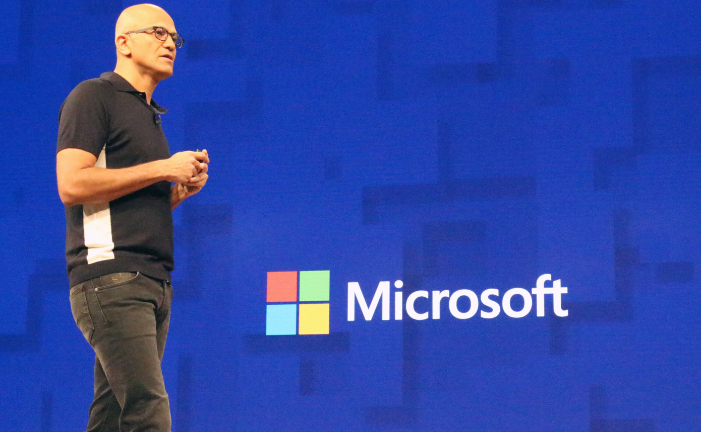

Microsoft acquires FSLogix to enhance Office 365 virtual desktop experience
“FSLogix is a next-generation app-provisioning platform that reduces the resources, time and labor required to support virtualization,” Brad Anderson, corporate VP for Microsoft Office 365 and Julia White, corporate VP for Microsoft Azure, href="https://blogs.microsoft.com/blog/2018/11/19/microsoft-acquires-fslogix-to-enhance-the-office-365-virtualization-experience/">wrote in a joint blog post today.
When Microsoft made the virtual desktop announcement in September they named Citrix, CloudJumper, Lakeside Software, Liquidware, People Tech Group, ThinPrint and FSLogix as partners working on solutions. Apparently, the company decided it wanted to own one of those experiences and acquired FSLogix.
Microsoft believes by incorporating the FSLogix solution, it will provide a better virtual desktop experience for its customers by enabling better performance and faster load times, especially for Office 365 ProPlus customers.
Randy Cook, founder and CTO at FSLogix, said the acquisition made sense given how well the two companies have worked together over the years. “From the beginning, in working closely with several teams at Microsoft, we recognized that our missions were completely aligned. Both FSLogix and Microsoft are dedicated to providing the absolute best experience for companies choosing to deploy virtual desktops,” Cook wrote in a blog post announcing the acquisition.

Comments
Lots of companies have what are essentially dumb terminals running just the tools each employee needs, rather than a fully functioning standalone PC. Citrix has made a living offering these services. When employees come in to start the day, they sign in with their credentials and they get a virtual desktop with the tools they need to do their jobs. Microsoft’s version of this involves Office 365 and Windows 10 running on Azure.
FSLogix was founded in 2013 and has raised more than $10 million, according to data on Crunchbase. Today’s acquisition, which has already closed according to Microsoft, comes on the heels of last week’s announcement that the company was buying Xoxco, an Austin-based developer shop with experience building conversational bots.